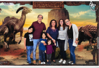

Maria Isabel Estrada | WDD 130
Hello. My name is Maria Isabel Estrada de Villagran, but I prefer Isabel. I am 66 years old. My favorite music is Latin American, mainly from Mexico, Cuba, Chile, and Argentina. I like to read Latin American novels; my preferred writers are Gabriel García Márquez, Isabel Allende, and Elena Poniatowska. The movies I want the best are romantic style, but in the last 30 years, we have gone to the movies to see most of all Animated and superhero pictures, first because my two daughters have a difference of 11 years, and then I have three grandchildren from the oldest. They are 9, 11, and 14 years old. Now I am retired, but I used to work at Scotiabank IT for almost 40 years.